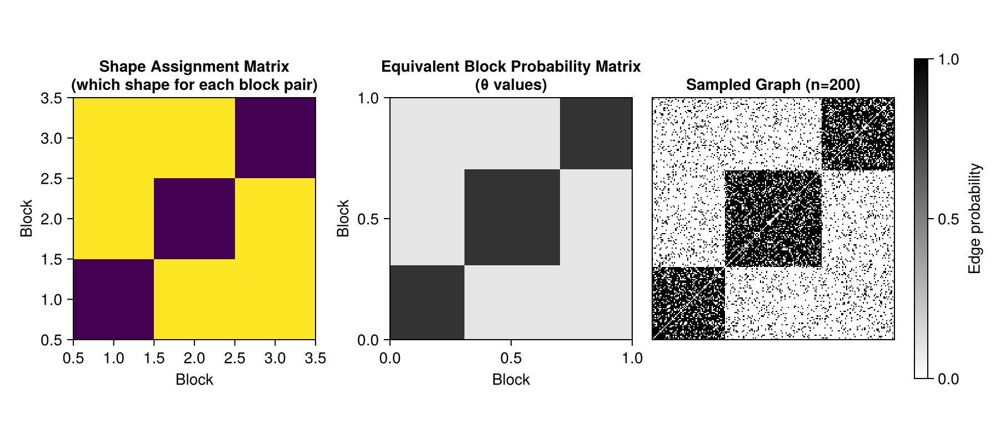
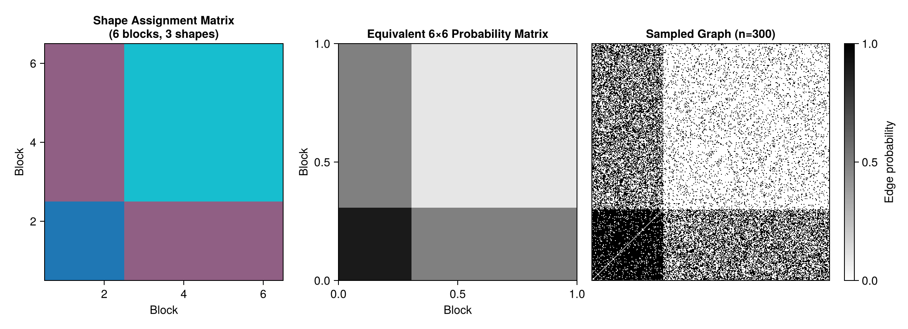
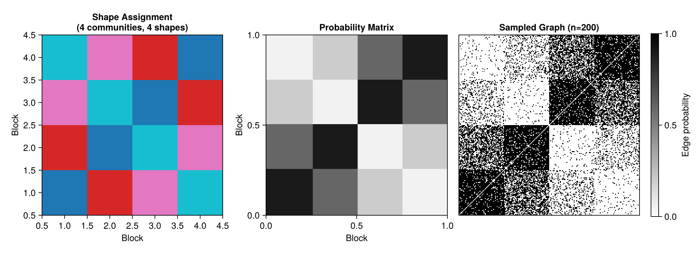
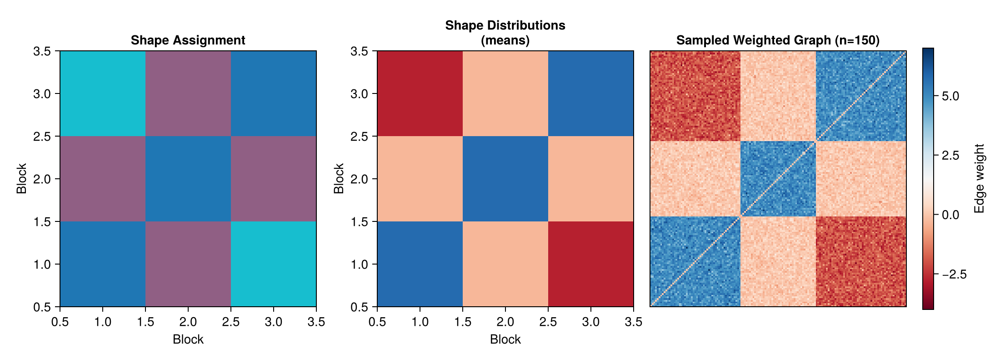
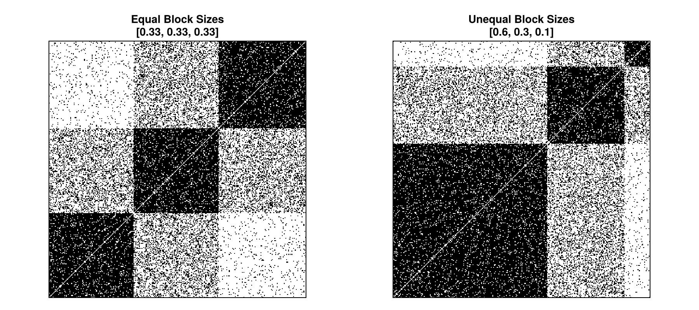
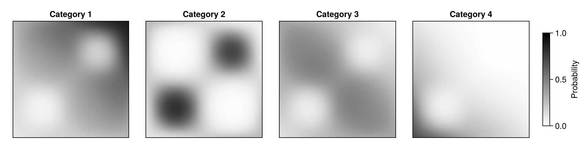
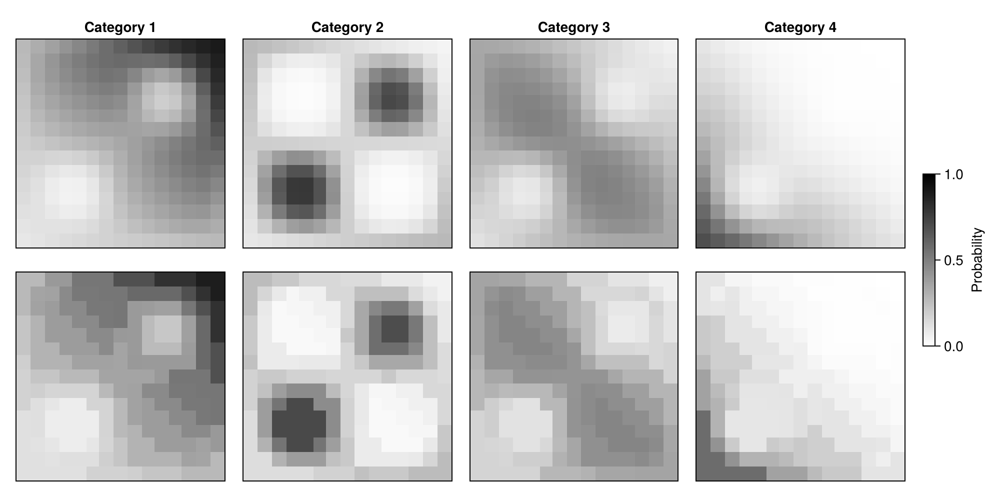

Stochastic Shape Models
This tutorial introduces Stochastic Shape Models (SSMs), an extension of Stochastic Block Models that reduces the number of parameters while improving the flexibility to model complex network structures.
SSMs address a fundamental challenge in network modeling: standard SBMs with k blocks require k² parameters (one for each block pair), which grows quickly. SSMs reduce this by using a small number of "shapes" (connectivity patterns) that are shared across multiple block pairs.
What is a Stochastic Shape Model?
A Stochastic Shape Model is defined by three components:
- Shape parameters θ: A vector of S edge probabilities (or distributions), where S << k²
- Shape assignment matrix Ψ: A k×k matrix that assigns each block pair (i,j) to one of the S shapes
- Block sizes: The proportion of nodes in each block (same as in SBMs)
The key insight: many block pairs can share the same connectivity pattern!
Mathematical Formulation
Definition 2.1 (Stochastic Shape Model $(S S M)$ ). Assume we have defined $s \in \mathbb{N}^{+}$nonintersecting closed regions in $\mathcal{T}=[0,1]^2 \cap\{x \leq y\}$, let us call them $S_c$ for $c \in[s]$. Define $S_s=\mathcal{T} \backslash\left\{\cup_{c<s} S_c\right\}$. We can then define the function $f$ for the $s$ constants $0<\theta_c<1$, for $c \in[s]$ to be
\[f(x, y)=\left\{\begin{array}{lll} \theta_c & \text { if } & (x, y) \in S_c \\ \theta_c & \text { if } & (y, x) \in S_c \end{array} .\right.\]
For nodes i and j with latent positions $ξ_i$ and $ξ_j$
\[\mathbb{P}(A_{i,j} = 1) = f(ξ_i, ξ_j) = \theta_{c} \quad \text{if } (ξ_i, ξ_j) \in S_c\]
Instead of k² unique probabilities, we only need S parameters where S << k².
Motivation: Parameter Efficiency
Consider a k=10 block network:
- Standard SBM: Requires 100 parameters (10×10 matrix)
- SSM with 5 shapes: Requires only 5 parameters + assignment matrix
This makes SSMs particularly useful for:
- Large networks with many blocks but limited data
- Hierarchical structures where similar patterns repeat
- Model selection with limited samples to avoid overfitting
Setup
Load the packages we'll need:
using Graphons
using Random
using CairoMakie
using Distributions
Random.seed!(42)TaskLocalRNG()Example 1: Simple Bipartite Structure
Let's start with a simple example: a network with 3 blocks where we want:
- High connectivity within blocks (assortative)
- Low connectivity between blocks (sparse)
Using only 2 shapes instead of 9 SBM parameters:
Define the shapes:
θ = [0.8, # Shape 1: high probability (within-block)
0.1] # Shape 2: low probability (between-block)2-element Vector{Float64}:
0.8
0.1Assign shapes to block pairs:
block_pair_to_shape = [1 2 2; # Block 1: high within, low to others
2 1 2; # Block 2: high within, low to others
2 2 1] # Block 3: high within, low to others3×3 Matrix{Int64}:
1 2 2
2 1 2
2 2 1Block sizes:
sizes = [0.3, 0.4, 0.3]3-element Vector{Float64}:
0.3
0.4
0.3Create the SSM:
ssm_simple = SSM(θ, block_pair_to_shape, sizes, cumsum(sizes))SSM{Bool, BitMatrix, Vector{Float64}, Matrix{Int64}, Vector{Float64}, Vector{Float64}}([0.8, 0.1], [1 2 2; 2 1 2; 2 2 1], [0.3, 0.4, 0.3], [0.3, 0.7, 1.0])Let's visualize both the shape assignment and a sampled graph:
fig = Figure(size = (900, 400))
ax1 = Axis(fig[1, 1],
title = "Shape Assignment Matrix\n(which shape for each block pair)",
xlabel = "Block",
ylabel = "Block",
aspect = 1)
ax2 = Axis(fig[1, 2],
title = "Equivalent Block Probability Matrix\n(θ values)",
xlabel = "Block",
ylabel = "Block",
aspect = 1)
ax3 = Axis(fig[1, 3],
title = "Sampled Graph (n=200)",
aspect = 1)Axis with 0 plots:
Visualize shape assignments
heatmap!(ax1, block_pair_to_shape)Makie.Heatmap{Tuple{Makie.EndPoints{Float32}, Makie.EndPoints{Float32}, Matrix{Float32}}}Visualize the equivalent probability matrix using direct plotting
hm = heatmap!(ax2, ssm_simple, colormap = :binary, colorrange = (0, 1))Makie.Heatmap{Tuple{Vector{Float64}, Vector{Float64}, Matrix{Float64}}}Sample and visualize graph
hidedecorations!(ax3)
A_simple = sample_graph(ssm_simple, 200)
heatmap!(ax3, A_simple, colormap = :binary)
Colorbar(fig[1, 4], hm, label = "Edge probability")
fig
Key observation: We achieved the same result as a 3-block SBM but using only 2 parameters instead of 9! The shape assignment matrix shows that diagonal blocks use shape 1 (high connectivity) while off-diagonal use shape 2 (low connectivity).
Example 2: Hierarchical Core-Periphery
SSMs excel at modeling hierarchical structures. Let's create a 6-block network with:
- A core of 2 blocks (densely connected)
- A periphery of 4 blocks (sparsely connected)
- Medium connectivity between core and periphery
We'll use only 3 shapes:
θ_hier = [0.9, # Shape 1: dense (core-core)
0.5, # Shape 2: medium (core-periphery)
0.1] # Shape 3: sparse (periphery-periphery)3-element Vector{Float64}:
0.9
0.5
0.1Create the shape assignment matrix for hierarchical structure:
block_pair_to_shape_hier = [1 1 2 2 2 2; # Core block 1
1 1 2 2 2 2; # Core block 2
2 2 3 3 3 3; # Periphery block 1
2 2 3 3 3 3; # Periphery block 2
2 2 3 3 3 3; # Periphery block 3
2 2 3 3 3 3]
sizes_hier = [0.15, 0.15, 0.175, 0.175, 0.175, 0.175] # Core smaller than periphery
ssm_hier = SSM(θ_hier, block_pair_to_shape_hier, sizes_hier, cumsum(sizes_hier))SSM{Bool, BitMatrix, Vector{Float64}, Matrix{Int64}, Vector{Float64}, Vector{Float64}}([0.9, 0.5, 0.1], [1 1 … 2 2; 1 1 … 2 2; … ; 2 2 … 3 3; 2 2 … 3 3], [0.15, 0.15, 0.175, 0.175, 0.175, 0.175], [0.15, 0.3, 0.475, 0.6499999999999999, 0.825, 0.9999999999999999])Visualize the hierarchical structure:
fig = Figure(size = (1100, 400))
ax1 = Axis(fig[1, 1],
title = "Shape Assignment Matrix\n(6 blocks, 3 shapes)",
xlabel = "Block",
ylabel = "Block",
aspect = 1)
ax2 = Axis(fig[1, 2],
title = "Equivalent 6×6 Probability Matrix",
xlabel = "Block",
ylabel = "Block",
aspect = 1)
ax3 = Axis(fig[1, 3],
title = "Sampled Graph (n=300)",
aspect = 1)
heatmap!(ax1, block_pair_to_shape_hier, colormap = :tab10, colorrange = (1, 3))
hm = heatmap!(ax2, ssm_hier, colormap = :binary, colorrange = (0, 1))
hidedecorations!(ax3)
A_hier = sample_graph(ssm_hier, 300)
heatmap!(ax3, A_hier, colormap = :binary)
Colorbar(fig[1, 4], hm, label = "Edge probability")
fig
Key advantage: This 6-block hierarchical model uses only 3 parameters instead of 36! The clear two-level hierarchy (dense core in top-left, sparse periphery in bottom-right) is efficiently captured by shape sharing.
Example 3: Modular Networks with Weak Ties
Real networks often have multiple dense communities connected by sparse "weak ties". Let's model a 4-community network where:
- Communities 1-2 form one meta-module
- Communities 3-4 form another meta-module
- Within-module connections are stronger than between-module
Using 4 shapes:
θ_modular = [0.9, # Shape 1: within-community
0.6, # Shape 2: within-module, between-community
0.2, # Shape 3: between-module
0.05] # Shape 4: no connection (rare edges)
block_pair_to_shape_modular = [1 2 3 4; # Community 1
2 1 4 3; # Community 2
3 4 1 2; # Community 3
4 3 2 1]
sizes_modular = [0.25, 0.25, 0.25, 0.25]
ssm_modular = SSM(θ_modular, block_pair_to_shape_modular,
sizes_modular, cumsum(sizes_modular))SSM{Bool, BitMatrix, Vector{Float64}, Matrix{Int64}, Vector{Float64}, Vector{Float64}}([0.9, 0.6, 0.2, 0.05], [1 2 3 4; 2 1 4 3; 3 4 1 2; 4 3 2 1], [0.25, 0.25, 0.25, 0.25], [0.25, 0.5, 0.75, 1.0])Visualize:
fig = Figure(size = (1100, 400))
ax1 = Axis(fig[1, 1],
title = "Shape Assignment\n(4 communities, 4 shapes)",
xlabel = "Block",
ylabel = "Block",
aspect = 1)
ax2 = Axis(fig[1, 2],
title = "Probability Matrix",
xlabel = "Block",
ylabel = "Block",
aspect = 1)
ax3 = Axis(fig[1, 3],
title = "Sampled Graph (n=200)",
aspect = 1)
heatmap!(ax1, block_pair_to_shape_modular, colormap = :tab10, colorrange = (1, 4))
hm = heatmap!(ax2, ssm_modular, colormap = :binary, colorrange = (0, 1))
hidedecorations!(ax3)
A_modular = sample_graph(ssm_modular, 200)
heatmap!(ax3, A_modular, colormap = :binary)
Colorbar(fig[1, 4], hm, label = "Edge probability")
fig
Notice the symmetric checkerboard pattern! This reflects the two meta-modules. The SSM uses only 4 parameters to capture this complex structure, compared to 16 parameters for an equivalent SBM.
Converting SSMs to SBMs
Every SSM can be converted to an equivalent SBM by expanding the shape assignments:
sbm_from_ssm = Graphons.convert_to_sbm(ssm_modular)
println("SSM type: ", typeof(ssm_modular))
println("SSM parameters: ", length(ssm_modular.θ), " shapes")
println("\nConverted SBM type: ", typeof(sbm_from_ssm))
println("SBM matrix size: ", size(sbm_from_ssm.θ))
println("SBM parameters: ", length(sbm_from_ssm.θ), " entries")SSM type: SSM{Bool, BitMatrix, Vector{Float64}, Matrix{Int64}, Vector{Float64}, Vector{Float64}}
SSM parameters: 4 shapes
Converted SBM type: SBM{Matrix{Float64}, Vector{Float64}, Vector{Float64}}
SBM matrix size: (4, 4)
SBM parameters: 16 entriesThe SSM and SBM are mathematically equivalent, but the SSM representation is more compact and interpretable when many block pairs share patterns.
Decorated SSMs: Adding Edge Attributes
Just like SBMs can be decorated with distributions, SSMs can too! This combines parameter efficiency with rich edge attributes.
Let's create an SSM with weighted edges:
Define shape distributions (instead of probabilities):
θ_weighted = [
Normal(5.0, 0.5), # Shape 1: strong positive connections
Normal(0.0, 0.3), # Shape 2: weak/zero connections
Normal(-2.0, 0.5) # Shape 3: negative/inhibitory connections
]3-element Vector{Distributions.Normal{Float64}}:
Distributions.Normal{Float64}(μ=5.0, σ=0.5)
Distributions.Normal{Float64}(μ=0.0, σ=0.3)
Distributions.Normal{Float64}(μ=-2.0, σ=0.5)3-block network with signed edges:
block_pair_to_shape_weighted = [1 2 3; # Block 1: positive within, weak to 2, negative to 3
2 1 2; # Block 2: positive within, weak elsewhere
3 2 1]
sizes_weighted = [0.35, 0.3, 0.35]
ssm_weighted = SSM(θ_weighted, block_pair_to_shape_weighted,
sizes_weighted, cumsum(sizes_weighted))SSM{Float64, Matrix{Float64}, Vector{Distributions.Normal{Float64}}, Matrix{Int64}, Vector{Float64}, Vector{Float64}}(Distributions.Normal{Float64}[Distributions.Normal{Float64}(μ=5.0, σ=0.5), Distributions.Normal{Float64}(μ=0.0, σ=0.3), Distributions.Normal{Float64}(μ=-2.0, σ=0.5)], [1 2 3; 2 1 2; 3 2 1], [0.35, 0.3, 0.35], [0.35, 0.6499999999999999, 0.9999999999999999])Sample a weighted graph:
A_weighted = sample_graph(ssm_weighted, 150)
println("Weighted matrix type: ", typeof(A_weighted))
println("Matrix size: ", size(A_weighted))
println("Value range: [", minimum(A_weighted), ", ", maximum(A_weighted), "]")Weighted matrix type: Matrix{Float64}
Matrix size: (150, 150)
Value range: [-3.6264762062670908, 6.883325873524579]Visualize the weighted network:
fig = Figure(size = (1100, 400))
ax1 = Axis(fig[1, 1],
title = "Shape Assignment",
xlabel = "Block",
ylabel = "Block",
aspect = 1)
ax2 = Axis(fig[1, 2],
title = "Shape Distributions\n(means)",
xlabel = "Block",
ylabel = "Block",
aspect = 1)
ax3 = Axis(fig[1, 3],
title = "Sampled Weighted Graph (n=150)",
aspect = 1)
heatmap!(ax1, block_pair_to_shape_weighted, colormap = :tab10, colorrange = (1, 3))Makie.Heatmap{Tuple{Makie.EndPoints{Float32}, Makie.EndPoints{Float32}, Matrix{Float32}}}Show mean of each distribution
θ_means = [mean(d) for d in θ_weighted]
θ_matrix_weighted = [θ_means[block_pair_to_shape_weighted[i, j]]
for i in 1:3, j in 1:3]
hm_means = heatmap!(ax2, θ_matrix_weighted, colormap = :RdBu,
colorrange = (-3, 6))
hidedecorations!(ax3)
hm_weights = heatmap!(ax3, A_weighted, colormap = :RdBu,
colorrange = (-4, 7))
Colorbar(fig[1, 4], hm_weights, label = "Edge weight")
fig
Interpretation: The SSM creates three distinct types of connections:
- Diagonal (shape 1): Strong positive weights (red)
- Off-diagonal corners (shape 3): Negative weights (blue)
- Other pairs (shape 2): Weak weights (white)
Example 4: Degree-Corrected SSM
We can create more realistic networks by varying block sizes to simulate degree heterogeneity while keeping the shape structure:
Same shapes as before, but with very unequal block sizes:
θ_dc = [0.9, 0.3, 0.05]
block_pair_to_shape_dc = [1 2 3;
2 1 2;
3 2 1]
sizes_dc = [0.6, 0.3, 0.1] # Highly unequal blocks
ssm_dc = SSM(θ_dc, block_pair_to_shape_dc, sizes_dc, cumsum(sizes_dc))SSM{Bool, BitMatrix, Vector{Float64}, Matrix{Int64}, Vector{Float64}, Vector{Float64}}([0.9, 0.3, 0.05], [1 2 3; 2 1 2; 3 2 1], [0.6, 0.3, 0.1], [0.6, 0.8999999999999999, 1.0])Compare equal vs unequal sizes:
fig = Figure(size = (900, 400))
ax1 = Axis(fig[1, 1],
title = "Equal Block Sizes\n[0.33, 0.33, 0.33]",
aspect = 1)
ax2 = Axis(fig[1, 2],
title = "Unequal Block Sizes\n[0.6, 0.3, 0.1]",
aspect = 1)
hidedecorations!.([ax1, ax2])2-element BitVector:
0
0Sample with equal sizes
ssm_equal = SSM(θ_dc, block_pair_to_shape_dc, [0.33, 0.33, 0.34],
cumsum([0.33, 0.33, 0.34]))
A_equal = sample_graph(ssm_equal, 300)
heatmap!(ax1, A_equal, colormap = :binary)Makie.Heatmap{Tuple{Makie.EndPoints{Float32}, Makie.EndPoints{Float32}, Matrix{Float32}}}Sample with unequal sizes
A_unequal = sample_graph(ssm_dc, 300)
heatmap!(ax2, A_unequal, colormap = :binary)
fig
Analyzing Shape Assignments
Let's analyze which block pairs are assigned to which shapes:
function analyze_shape_assignments(ssm)
K = length(ssm.size)
S = length(ssm.θ)
println("Number of blocks: ", K)
println("Number of shapes: ", S)
println("\nShape assignments:")
for s in 1:S
pairs = [(i, j) for i in 1:K for j in 1:K
if ssm.block_pair_to_shape[i, j] == s]
n_pairs = length(pairs)
println("\nShape $s (θ = $(ssm.θ[s])):")
println(" Used by $n_pairs block pairs ($(round(100*n_pairs/K^2, digits=1))%)")
if n_pairs ≤ 6
println(" Pairs: ", pairs)
end
end
end
analyze_shape_assignments(ssm_modular)Number of blocks: 4
Number of shapes: 4
Shape assignments:
Shape 1 (θ = 0.9):
Used by 4 block pairs (25.0%)
Pairs: [(1, 1), (2, 2), (3, 3), (4, 4)]
Shape 2 (θ = 0.6):
Used by 4 block pairs (25.0%)
Pairs: [(1, 2), (2, 1), (3, 4), (4, 3)]
Shape 3 (θ = 0.2):
Used by 4 block pairs (25.0%)
Pairs: [(1, 3), (2, 4), (3, 1), (4, 2)]
Shape 4 (θ = 0.05):
Used by 4 block pairs (25.0%)
Pairs: [(1, 4), (2, 3), (3, 2), (4, 1)]This helps understand how parameter sharing works in the model.
References
Stochastic Shape Models were introduced in (Verdeyme and Olhede, 2024)
The paper provides:
- Theoretical properties (consistency, rates of convergence)
- Model selection procedures for choosing S
- Applications to real network data
- Comparisons with standard SBMs and other graphon models
Real-World Example: Multiplex Network from Research
Let's recreate an example from recent research on decorated graphon estimation (Dufour & Olhede, 2024). This example demonstrates how SSMs can provide smoother approximations than standard SBMs for complex multiplex networks.
The graphon w3 models a 4-category multiplex network where edge probabilities are determined by a softmax transformation of four distinct spatial patterns:
using LogExpFunctions: softmax!
function w3(x, y)
tabulation = zeros(4)
tabulation[1] = 3 * x * y # Linear interaction
tabulation[2] = 3 * sin(2 * π * x) * sin(2 * π * y) # Periodic pattern
tabulation[3] = exp(-3 * ((x - 0.5)^2 + (y - 0.5)^2)) # Gaussian bump
tabulation[4] = 2 - 3 * (x + y) # Decreasing pattern
softmax!(tabulation)
return DiscreteNonParametric(0:3, tabulation)
endw3 (generic function with 1 method)Create the decorated graphon:
graphon_w3 = DecoratedGraphon(w3)DecoratedGraphon{Int64, Matrix{Int64}, typeof(Main.w3), Distributions.DiscreteNonParametric{Int64, Float64, UnitRange{Int64}, Vector{Float64}}}(Main.w3)Visualize the four category probabilities:
fig = Figure(size = (1000, 250))
for i in 1:4
ax = Axis(fig[1, i],
title = "Category $i",
aspect = 1)
hidedecorations!(ax)
hm = heatmap!(ax, graphon_w3, k = i, colormap = :binary, colorrange = (0, 1))
end
Colorbar(fig[1, 5], colormap = :binary, colorrange = (0, 1),
label = "Probability", height = Relative(0.8))
fig
Comparing SBM vs SSM Approximations
Create a standard SBM approximation with k=10 blocks:
k_blocks = 15
sbm_w3 = empirical_graphon(graphon_w3, k_blocks)DecoratedSBM{Distributions.DiscreteNonParametric{Int64, Float64, UnitRange{Int64}, Vector{Float64}}, Matrix{Int64}, Matrix{Distributions.DiscreteNonParametric{Int64, Float64, UnitRange{Int64}, Vector{Float64}}}, Vector{Float64}, Vector{Float64}}(Distributions.DiscreteNonParametric{Int64, Float64, UnitRange{Int64}, Vector{Float64}}[Distributions.DiscreteNonParametric{Int64, Float64, UnitRange{Int64}, Vector{Float64}}(support=0:3, p=[0.09399344867091115, 0.09399344867091115, 0.11749023749685668, 0.694522865161321]) Distributions.DiscreteNonParametric{Int64, Float64, UnitRange{Int64}, Vector{Float64}}(support=0:3, p=[0.10779627337812471, 0.10779627337812471, 0.14152790828121772, 0.6428795449625327]) … Distributions.DiscreteNonParametric{Int64, Float64, UnitRange{Int64}, Vector{Float64}}(support=0:3, p=[0.2653424838038297, 0.2653424838038297, 0.3483735154662562, 0.12094151692608437]) Distributions.DiscreteNonParametric{Int64, Float64, UnitRange{Int64}, Vector{Float64}}(support=0:3, p=[0.2764062879879321, 0.2764062879879321, 0.3455032332628625, 0.1016841907612732]); Distributions.DiscreteNonParametric{Int64, Float64, UnitRange{Int64}, Vector{Float64}}(support=0:3, p=[0.10779627337812471, 0.10779627337812471, 0.14152790828121772, 0.6428795449625327]) Distributions.DiscreteNonParametric{Int64, Float64, UnitRange{Int64}, Vector{Float64}}(support=0:3, p=[0.11305098062876083, 0.19584000948213445, 0.1552016436477567, 0.5359073662413479]) … Distributions.DiscreteNonParametric{Int64, Float64, UnitRange{Int64}, Vector{Float64}}(support=0:3, p=[0.34365286081054003, 0.16011417160031988, 0.3926210424754636, 0.10361192511367641]) Distributions.DiscreteNonParametric{Int64, Float64, UnitRange{Int64}, Vector{Float64}}(support=0:3, p=[0.32191086253875345, 0.25981997010884017, 0.3411228955031282, 0.07714627184927828]); … ; Distributions.DiscreteNonParametric{Int64, Float64, UnitRange{Int64}, Vector{Float64}}(support=0:3, p=[0.2653424838038297, 0.2653424838038297, 0.3483735154662562, 0.12094151692608437]) Distributions.DiscreteNonParametric{Int64, Float64, UnitRange{Int64}, Vector{Float64}}(support=0:3, p=[0.34365286081054003, 0.1601141716003199, 0.39262104247546364, 0.10361192511367642]) … Distributions.DiscreteNonParametric{Int64, Float64, UnitRange{Int64}, Vector{Float64}}(support=0:3, p=[0.8068210794334104, 0.10681864995028272, 0.08465292709266645, 0.0017073435236405804]) Distributions.DiscreteNonParametric{Int64, Float64, UnitRange{Int64}, Vector{Float64}}(support=0:3, p=[0.8740706259321737, 0.053917057545924844, 0.07078879571639543, 0.0012235208055060467]); Distributions.DiscreteNonParametric{Int64, Float64, UnitRange{Int64}, Vector{Float64}}(support=0:3, p=[0.2764062879879321, 0.2764062879879321, 0.3455032332628625, 0.1016841907612732]) Distributions.DiscreteNonParametric{Int64, Float64, UnitRange{Int64}, Vector{Float64}}(support=0:3, p=[0.32191086253875345, 0.25981997010884017, 0.3411228955031282, 0.07714627184927828]) … Distributions.DiscreteNonParametric{Int64, Float64, UnitRange{Int64}, Vector{Float64}}(support=0:3, p=[0.8740706259321737, 0.053917057545924844, 0.07078879571639543, 0.0012235208055060467]) Distributions.DiscreteNonParametric{Int64, Float64, UnitRange{Int64}, Vector{Float64}}(support=0:3, p=[0.8985275315618875, 0.04473505164427972, 0.05591806574224748, 0.0008193510515855016])], [0.06666666666666667, 0.06666666666666667, 0.06666666666666667, 0.06666666666666667, 0.06666666666666667, 0.06666666666666667, 0.06666666666666667, 0.06666666666666667, 0.06666666666666667, 0.06666666666666667, 0.06666666666666667, 0.06666666666666667, 0.06666666666666667, 0.06666666666666667, 0.06666666666666678], [0.06666666666666667, 0.13333333333333333, 0.2, 0.26666666666666666, 0.3333333333333333, 0.39999999999999997, 0.4666666666666666, 0.5333333333333333, 0.6, 0.6666666666666666, 0.7333333333333333, 0.7999999999999999, 0.8666666666666666, 0.9333333333333332, 1.0])For the SSM, we'll use fewer shapes (s=30) than the SBM parameters (k(k+1)/2=120): This demonstrates the parameter efficiency of SSMs. In the Graphons package, to automatically create an SSM from an SBM, we can load the Clustering package and use the SSM constructor:
using Clustering
ssm_w3 = SSM(sbm_w3, 30)SSM{Int64, Matrix{Int64}, Vector{Distributions.DiscreteNonParametric{Int64, Float64, UnitRange{Int64}, Vector{Float64}}}, Matrix{Int64}, Vector{Float64}, Vector{Float64}}(Distributions.DiscreteNonParametric{Int64, Float64, UnitRange{Int64}, Vector{Float64}}[Distributions.DiscreteNonParametric{Int64, Float64, UnitRange{Int64}, Vector{Float64}}(support=0:3, p=[0.26674673933824883, 0.5700232960566335, 0.15435947249315599, 0.008870492111961652]), Distributions.DiscreteNonParametric{Int64, Float64, UnitRange{Int64}, Vector{Float64}}(support=0:3, p=[0.2265479285848973, 0.21318422071070361, 0.3489940187754045, 0.21127383192899457]), Distributions.DiscreteNonParametric{Int64, Float64, UnitRange{Int64}, Vector{Float64}}(support=0:3, p=[0.8076570737466309, 0.084579767508114, 0.10524078882262143, 0.0025223699226336435]), Distributions.DiscreteNonParametric{Int64, Float64, UnitRange{Int64}, Vector{Float64}}(support=0:3, p=[0.4004879964075473, 0.21389165567610913, 0.3449118076591279, 0.040708540257215584]), Distributions.DiscreteNonParametric{Int64, Float64, UnitRange{Int64}, Vector{Float64}}(support=0:3, p=[0.5899470081278164, 0.2510152989905693, 0.1532296910477855, 0.005808001833828773]), Distributions.DiscreteNonParametric{Int64, Float64, UnitRange{Int64}, Vector{Float64}}(support=0:3, p=[0.35611846917320916, 0.16012950617249766, 0.41922214961968496, 0.06452987503460825]), Distributions.DiscreteNonParametric{Int64, Float64, UnitRange{Int64}, Vector{Float64}}(support=0:3, p=[0.12062621062670355, 0.13442438210226582, 0.16786235729983703, 0.5770870499711935]), Distributions.DiscreteNonParametric{Int64, Float64, UnitRange{Int64}, Vector{Float64}}(support=0:3, p=[0.2984461557491886, 0.0781622175505222, 0.4365466694829775, 0.18684495721731167]), Distributions.DiscreteNonParametric{Int64, Float64, UnitRange{Int64}, Vector{Float64}}(support=0:3, p=[0.4604248947801865, 0.037076033538677625, 0.44309149371745615, 0.059407577963679785]), Distributions.DiscreteNonParametric{Int64, Float64, UnitRange{Int64}, Vector{Float64}}(support=0:3, p=[0.07029123588644016, 0.7154990863803325, 0.11474600222274098, 0.09946367551048627]) … Distributions.DiscreteNonParametric{Int64, Float64, UnitRange{Int64}, Vector{Float64}}(support=0:3, p=[0.3897797148426803, 0.02438632245890684, 0.47799131532878647, 0.10784264736962647]), Distributions.DiscreteNonParametric{Int64, Float64, UnitRange{Int64}, Vector{Float64}}(support=0:3, p=[0.5286252325746091, 0.057913595717031585, 0.37722557692771086, 0.0362355947806484]), Distributions.DiscreteNonParametric{Int64, Float64, UnitRange{Int64}, Vector{Float64}}(support=0:3, p=[0.12503277666396542, 0.3832653105910912, 0.19411608575961867, 0.2975858269853248]), Distributions.DiscreteNonParametric{Int64, Float64, UnitRange{Int64}, Vector{Float64}}(support=0:3, p=[0.8862990787470306, 0.04932605459510228, 0.06335343072932145, 0.0010214359285457741]), Distributions.DiscreteNonParametric{Int64, Float64, UnitRange{Int64}, Vector{Float64}}(support=0:3, p=[0.5344721142272436, 0.3690674156852362, 0.09391493524566044, 0.002545534841859617]), Distributions.DiscreteNonParametric{Int64, Float64, UnitRange{Int64}, Vector{Float64}}(support=0:3, p=[0.6859858356332463, 0.1372508288198278, 0.1699008659631611, 0.006862469583764668]), Distributions.DiscreteNonParametric{Int64, Float64, UnitRange{Int64}, Vector{Float64}}(support=0:3, p=[0.3960379444118762, 0.3424630442970467, 0.24566510694441088, 0.01583390434666626]), Distributions.DiscreteNonParametric{Int64, Float64, UnitRange{Int64}, Vector{Float64}}(support=0:3, p=[0.18900672208899516, 0.24188251479895567, 0.30243975033884485, 0.2666710127732044]), Distributions.DiscreteNonParametric{Int64, Float64, UnitRange{Int64}, Vector{Float64}}(support=0:3, p=[0.27318573171356664, 0.17773622633169084, 0.42217282149163965, 0.12690522046310282]), Distributions.DiscreteNonParametric{Int64, Float64, UnitRange{Int64}, Vector{Float64}}(support=0:3, p=[0.36300648371191296, 0.08622502187677383, 0.4544319665962432, 0.09633652781507004])], [7 7 … 14 14; 7 7 … 6 14; … ; 14 6 … 3 24; 14 14 … 24 24], [0.06666666666666667, 0.06666666666666667, 0.06666666666666667, 0.06666666666666667, 0.06666666666666667, 0.06666666666666667, 0.06666666666666667, 0.06666666666666667, 0.06666666666666667, 0.06666666666666667, 0.06666666666666667, 0.06666666666666667, 0.06666666666666667, 0.06666666666666667, 0.06666666666666678], [0.06666666666666667, 0.13333333333333333, 0.2, 0.26666666666666666, 0.3333333333333333, 0.39999999999999997, 0.4666666666666666, 0.5333333333333333, 0.6, 0.6666666666666666, 0.7333333333333333, 0.7999999999999999, 0.8666666666666666, 0.9333333333333332, 1.0])We can now visualize the difference between the SBM and SSM approximations:
fig = Figure(size = (1000, 500))
for i in 1:4
ax = Axis(fig[1:2, i],
title = "Category $i",
aspect = 1)
hidedecorations!(ax)
hm = heatmap!(ax, sbm_w3, k = i, colormap = :binary, colorrange = (0, 1))
ax2 = Axis(fig[3:4, i],
aspect = 1)
hidedecorations!(ax2)
hm = heatmap!(ax2, ssm_w3, k = i, colormap = :binary, colorrange = (0, 1))
end
Colorbar(fig[2:3, 5], colormap = :binary, colorrange = (0, 1),
label = "Probability", height = Relative(0.8))
fig
We can also measure the approximation error using mean squared error (MSE):
sum_squared_errors(x, y) = sum((x .- y) .^ 2)
function mse(graphon1, graphon2, xs = 0:0.01:1)
mean(
sum_squared_errors(params(graphon1(x, y))[2], params(graphon2(x, y))[2])
for x in xs, y in xs)
end
mse_sbm = mse(graphon_w3, sbm_w3)
mse_ssm = mse(graphon_w3, ssm_w3)
println("MSE of SBM approximation: ", round(mse_sbm, digits = 5))
println("MSE of SSM approximation: ", round(mse_ssm, digits = 5))MSE of SBM approximation: 0.00735
MSE of SSM approximation: 0.00936This page was generated using Literate.jl.